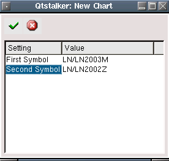

Create and update spread charts. A spread chart is the value of the first symbol minus the value of the second symbol. Usually used by futures traders, but can be used with any stock or futures chart. To create a new spread, press the "New" button, otherwise an update will update all the spread charts to their most current values.
The subtract method will calculate the first symbol "LN2003M" minus
the second symbol "LN2002Z". The chart will reflect the "spread"
between the two charts as a differnce positive or negative.
The divide method will calculate the first symbol "LN2003M" divided by the second symbol "LN2002Z". The chart will reflect the ratio between the two symbols.
Pressing the new button will bring up the following dialog.
